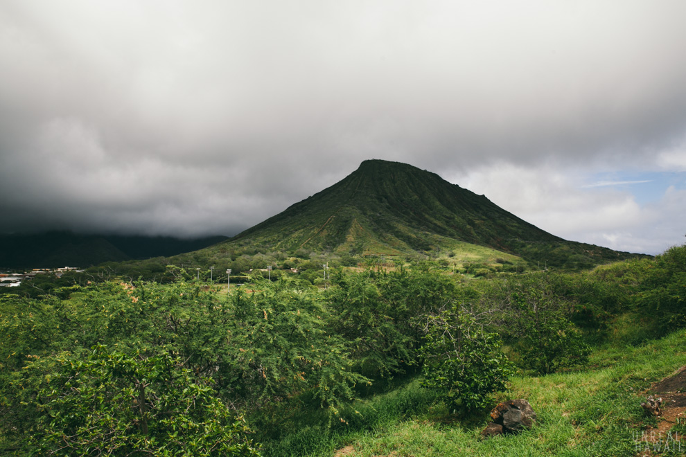
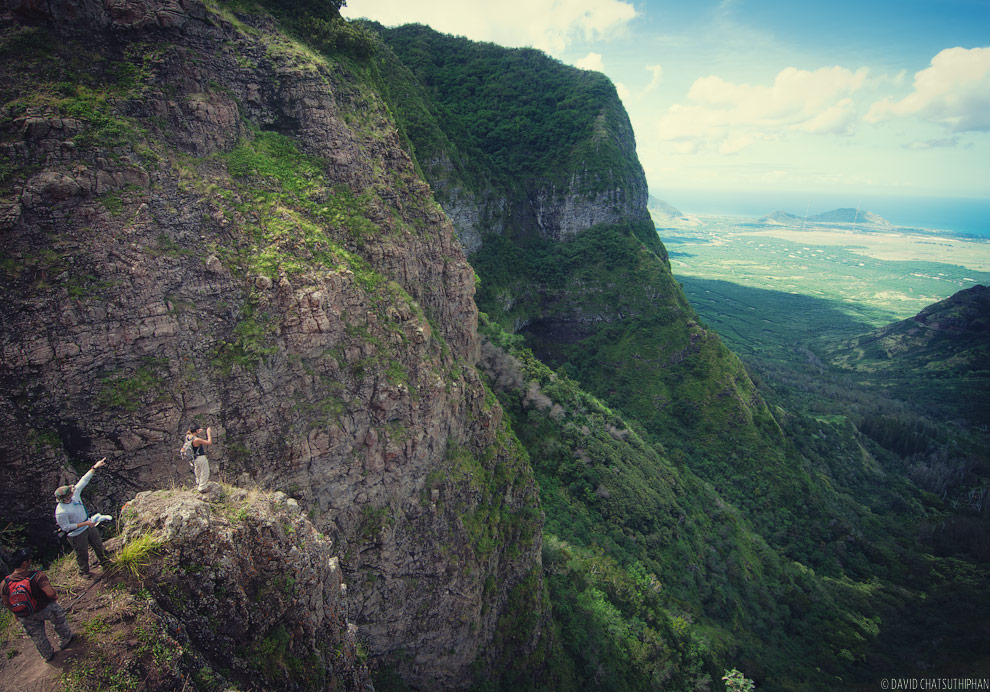
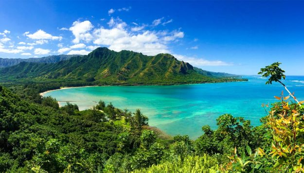

Welcome to Aloha Travel Agency
Koko koko Crater

Stairs stairs stairs and yes, more stairs! I’m referring to old railroad ties that are mounted to the hillside from the bottom to the top.
Koko Crater Trail, better known as “Koko Head Stairs”, is your StairMaster workout for the day, with a rewarding panoramic view up top. This Oahu hike will test your endurance and strength to continuously take each additional step up the mountain as you stride over 1000 steps to reach the top! As challenging as it sounds, hiking the Koko Head trail is a
Pu'u-hapapa

If I had to sum up Puu Hapapa in three words, those three words would be: short, thrilling, and exhilarating.
This actually was not my first attempt at Hapapa. Last February I was scheduled to hike it with a few other people. However, it ended up pouring rain within the first 15 minutes of the hike. Due to the unforeseen circumstances, Joel, Ahnate, and I decided that it would be best to pass on the rest of the hike and instead go, ummm, bowling. Hey, bowling, beer, and comfort food is a nice alternative to wet hiking! Four months later, we returned to Puu Hapapa. Fortunately for us, the skies were clear and the trail was nice and dry. Today’s crew would be Exploration: Hawaii regulars, Joel and Ahnate, plus my good buddy John, who just returned from a stint in Afghanistan. John was game for an epic hike and so were the rest of us. Hapapa was on like Donkey Kong.
Crouching Lion

This trail is not for the faint of heart or those easily scared of heights.
The trail follows the Pu’u Manamana ridge on the island of Oahu, Hawaii. The full loop is called the Kahekili-Manamana loop. It took us about 5 hours to complete. The trail is difficult to find in places, and very overgrown. Multiple times we were basically crawling through the mud in order to get under the heavy overgrowth. I know that at least a few hikers who have tried to hike this have died, so make sure you stay focused while hiking this trail and watch where you are placing your feet. It can also be very muddy in spots which makes for a very difficult time.